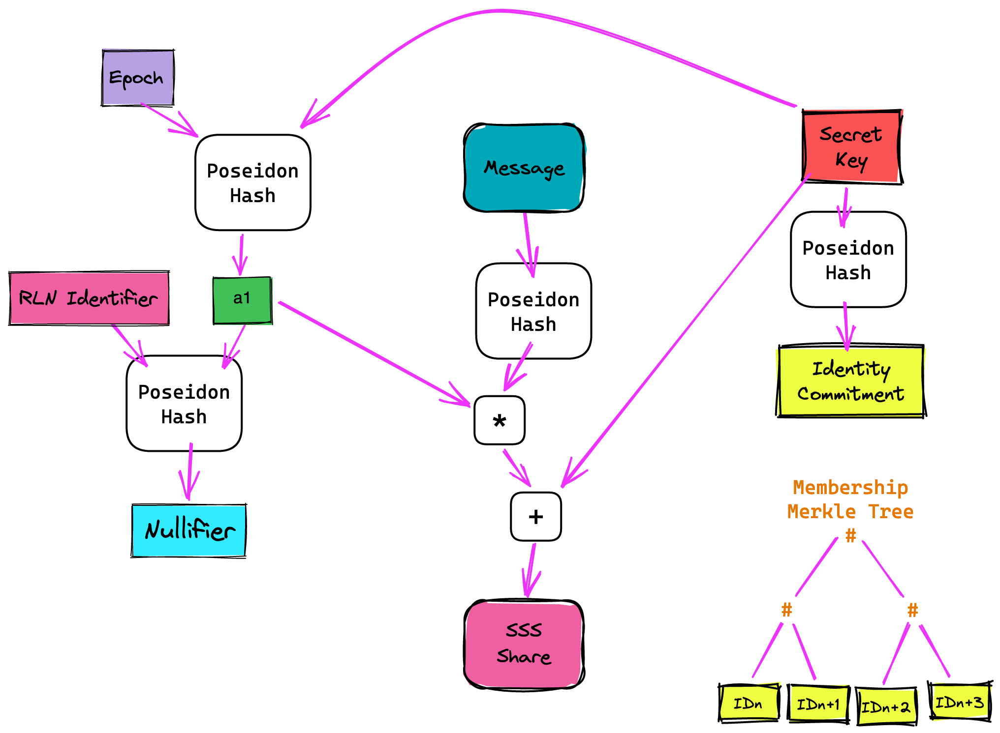

RLN (Rate-Limiting Nullifier) is a zk-gadget/protocol that enables spam prevention mechanism for anonymous environments.
RLN is part of (PSE) Privacy & Scaling Explorations, a multidisciplinary team supported by the Ethereum Foundation. PSE explores new use cases for zero-knowledge proofs and other cryptographic primitives.
Overview
This section is a starting point for understanding the concepts of RLN.
Here we'll discuss:
- Basic explanation of the RLN protocol;
- RLN protocol under the hood;
- RLN uses.
What is Rate-Limiting Nullifier?
RLN is a zero-knowledge gadget that enables spam prevention in anonymous environments.
The anonymity property opens up the possibility for spam, which could seriously degrade the user experience and the overall functioning of the application. For example, imagine a chat application where users are anonymous. Now, everyone can write an unlimited number of spam messages, but we don't have the ability to kick this member because the spammer is anonymous.
RLN helps us identify and "kick" the spammer.
Moreover, RLN can be useful not only to prevent spam attacks but, in general, to limit users (in anonymous environments) in the number of actions (f.e. to vote or to make a bid).
How it works
The RLN construct's functionality consists of three parts These parts should be integrated by the upstream applications, that require anonymity and spam protection. The applications can be centralized or decentralized. For decentralized applications, each user maintains separate storage and compute resources for the application.
The three parts are:
- registration;
- interaction;
- withdrawal (or slashing);
Registration
Before registering to the application, the user needs to generate a secret key and derive an identity commitment from the secret key using the Poseidon hash function:
\[identityCommitment = Poseidon(secretKey)\]
The user registers to the application by providing a form of stake and their identity commitment, which is derived from the secret key. The application maintains a Merkle tree data structure (in the latest iteration of RLN, we use an Incremental Merkle Tree algorithm for gas efficiency, but the Merkle tree does not have to be on-chain), which stores the identity commitments of the registered users. Upon successful registration, the user's identity commitment is stored in a leaf of the Merkle tree, and an index is given to them, representing their position in the tree.
Interaction
For each interaction that the user wants to make with the application, the user must generate a zero-knowledge proof ensuring that their identity commitment is part of the membership Merkle tree.
There are a number of use-cases for RLN, such as voting applications (1 vote per election), chat (one message per second), and rate-limiting cache access (CDN denial of service protection). The verifier can be a server for centralized applications or the other users for decentralized applications.
The general anti-spam rule is usually in the form of:
Users must not make more than X interactions per epoch.
The epoch can be translated as a time interval of Y units of time unit Z. For simplicity's sake, let's transform the rule into: `Users must not send more than one message per second.
We can implement this using Shamir's Secret Sharing scheme (read more), which allows you to split a secret (f.e. to n parts) and recover it when any m of n parts (m <= n) are presented.
Thus, users have to split their secret_key into n parts, and for every interaction, they have to reveal the new part of the secret_key. So, in addition to proving the membership in the Merkle Tree, users have to prove that the revealed part is truly the part of their secret_key.
If they make more interactions than allowed per epoch, their secret key can be fully reconstructed.
Withdrawal (or slashing)
The final property of the RLN mechanism is that it allows for the users to be removed from the membership tree by anyone that knows their secret key. The membership tree contains the identity commitments of all registered users. Users' identity commitment is derived from their secret key, and the secret key of the user is only revealed in a spam event (except for the scenarios where the original users want to remove themselves, which they can always do because they know their secret key). When an economic stake is present, the RLN mechanism can be implemented in a way that the spammer's stake is sent to the first user that correctly reports the spammer by providing the reconstructed secret key of the spammer as proof.
Technical side of RLN
This topic is a less strict version of specifications. If you want a more formal description, you can find specs in the references. Also, if you're unfamiliar with Shamir's Secret Sharing scheme, you can read it here.

Under the hood: The RLN Circom Circuit
RLN consists of three parts:
- User registration
- User interaction (signaling)
- User removal (slashing) - additional part
Well, let's discuss them.
User registration
The first part of RLN is registration. There is nothing special in RLN registration; it's almost the same process as in other protocols/apps with anonymous environments: we need to create a Merkle Tree, and every participant must submit a commitment and place it in the Merkle Tree, and after that to interact with the app every participant will create a zkProof's, that they are a member of the tree (we use an Incremental Merkle Tree, as it more GAS efficient).
So, each member generates a secret key, denoted by \(a_0\). Identity commitment \(q\) is the hash (Poseidon) of the secret key: \(q = Poseidon(a_0)\).
RLN wouldn't work if there were no punishment for spam; that's why to become a member, a user has to register and provide something at stake. So, whoever has our \(a_0\) can "slash" us.
The slight difference is that we must enable a secret sharing scheme (to split the commitment into parts). We need to come up with a polynomial. For simplicity we use linear polynomial (e.g. \(f(x) = kx + b\). Therefore, with two points, we can reconstruct the polynomial and recover the secret.
Our polynomial will be: \(A(x) = a_1 * x + a_0\), where \(a_1 = Poseidon(a_0, external\_nullifier)\). The meaning of \(external\_nullifier\) is described below.
Signalling
Now that the user is registered, he wants to interact with the system. Imagine that the system is an anonymous chat and the interaction is the sending of messages. So, to send a message user have to come up with share - the point \((x, y)\) on her polynomial. We denote: \(x = Poseidon(message), y = A(x)\).
Thus, if the same epoch user sends more than one message, their polynomial and, therefore, their secret (\(a_0\)) can be recovered.
Of course, we somehow must prove that our share = \((x, y)\) is valid (that this is really a point on our polynomial = A(x)), as well as we must prove other things are valid too, that's why we use zkSNARK. An explanation of the zk-circuits can be found in the next topic.
Slashing
As it's been said, if a user sends more than one message, everyone else will be able to recover his secret, slash them and take their stake.
Nullifiers
There are also \(internal\_nullifier\) and \(external\_nullifier\), which can be found in the RLN protocol/circuits.
\(external\_nullifier = Poseidon(epoch, rln\_identifier)\), where \(rln\_identifier\) is a random finite field value, unique per RLN app.
The \(external\_nullifier\) is required so that the user can securely use the same private key \(a_0\) across different RLN apps - in different applications (and in different eras) with the same secret key, the user will have different values of the coefficient \(a_1\).
Now, imagine there are a lot of users sending messages, and after each received message, we need to check if any member can be slashed. To do this, we can use all combinations of received shares and try to recover the polynomial, but this is a naive and non-optimal approach. Suppose we have a mechanism that will tell us about the connection between a person and their messages while not revealing their identity. In that case, we can solve this without brute-forcing all possibilities by using a public \(internal\_nullifier = Poseidon(a_1)\), so if a user sends more than one message, it will be immediately visible to everyone.
Some important notes
Also, in our example (and zk-chat implementation), we use linear polynomial, but SSS allows us to use various degree polynomials; therefore we can implement a protocol, where more than one signal (message) can be sent in per epoch.
To learn more, check out the specification; there are also circuits implemented for various degree polynomials too.
Protocol spec V2
TL;DR
The main goal of RLN v2 circuits is to make it possible to have a custom amount of messages (signals) per epoch without using a separate circuit or high-degree polynomials for Shamir's Secret Sharing.
RLN V1
The Current RLN circuit uses a first-degree polynomial for shares generation (and slashing). Therefore, there is a limit - one message per epoch.
There have been attempts to make schemes in which the message limit per epoch is greater than one. For example, N-RLN scheme & N-RLN Circuits. But this approach is very problematic; the bigger the epoch limit, the higher the polynomial for Shamir's Secret Sharing, and the more complicated the circuit is(more R1CS, etc.).
We have generally advised using 1 message/signal per epoch and adjusting the epoch length to match the rate limit desired for your use case. However, this isn’t very flexible and constrains the epoch length for all users to be the same per semaphore group (merkle tree).
Overview of RLN v1 circuits
Before we move on, this is a quick refresher on the inputs/outputs of the RLN v1 circuits and their general purpose. If you want more detail on how RLN circuits work, please read this, which goes into more detail.
Inputs:
Public:
external_nullifier=h(rln_identifier, epoch)- This identifies a unique epoch per app, whererln_identifieris some unique identifier for an app andepochis some unique identifier for an event or time;x=h(message).
Private:
- Secret Key
h(trapdoor, nullifier)- This is to prove you are in some merkle tree, and to make they_share, andinternal_nullifierunique to anid_commitment.
Outputs:
Internal_Nullifier- Used to identify a unique user during a specific epoch (external_nullifier)
Y_Share- This is the Shamir's Secret Sharing share
Update to V2
Instead of using higher degree polynomials to generate coefficients for higher epoch limits, we can add an input to the hash function, which is a counter k that ranges from 1 to n, the epoch limit (which can be id_commitment specific, for example in a registry contract.
The scheme would work as follows:
- The user generates a secret
a_0 - The coefficient
a_1is generated by taking the hash ofa_0, an external nullifier, and the counterk: h(a_0,external_nullifier,k) - The
internal_nullifieris then generated by taking the hash ofa_1: h(a_1)
By adding the counter k as an input to the hash function, the scheme becomes more flexible but still simple. It ensures that the user cannot use a value of k greater than n, which is the epoch limit, and if the user uses the same value of k twice, they will have two or more internal_nullifiers that collide, which allow the y_shares to be used determine their slashing credentials.
Overall, this proposal aims to provide more flexibility to the scheme while maintaining its simplicity.
Additional Inputs
The only additional inputs are:
- [private] Message ID (Counter)
k- a unique id per message per epoch, somewhere between the range1 < k < n - [public] Message Limit
n- the max number of messages a user can send
Additional Properties
There are also other cool features that come along with using this scheme:
- Internal nullifier value is different for different messages during the epoch (so it's more anonymous), even when having more than 1 signal per epoch
- It's more secure and resistant to algebraic attacks (which could arise in the N-RLN scheme linked above)
Different Rate-Limits
By using this scheme we created a circuit, that will allow us to use different rate-limits for different users, for example based on their stake.
We can do that by committing to not only our secret, but our secret and limit:
- Registry (map) is stored on a smart-contract, where keys are public keys (
id_commitment = Hash(identity_secret)) of users and values are some metadata (for examplelimitnumber or stake amount); - Merkle tree, where leaves are
rate_limit's =Hash(id_commitment, userMessagelimit)
For example, the possible limit is 1000 (n = 1000), and each message costs 0.001 ETH (so you will have 1000 messages limit if you stake 1 ETH).
So, when you join app you attach the amount of stake you want and also send the id_commitment and rate_commitment = Hash(id_commitment, userMessageLimit) will be calculated on-chain based on your stake.
Signaling will use other circuit, where your limit is private input, and the counter k is checked that it's in the range from 1 to userMessageLimit.
This text is from @AtHeartEngineer post on zkResear.ch.
Formal spec of circom-rln
Utils
utils.circom is a set of templates/gadgets that the RLN circuits uses.
These are:
- MerkleTreeInclusionProof - Merkle Tree inclusion check, used like set membership check;
- IsInInterval - used for range check.
Their description is given below.
MerkleTreeInclusionProof
MerkleTreeInclusionProof(DEPTH) template used for verification of inclusion in full binary incremental merkle tree. The implementation is a fork of https://github.com/privacy-scaling-explorations/incrementalquintree, and changed to binary tree and refactored to Circom 2.1.0.
Parameters:
DEPTH- depth of the Merkle Tree.
Inputs:
leaf-Poseidon(elem), whereelemis the element that's checked for inclusion;pathIndex[DEPTH]- array of length =DEPTH, consists of0 | 1, represents Merkle proof path. Basically, it says how to calculate Poseidon hash, e.g. for two inputsinput1,input2, if thepathIndex[i] = 0it shoud be calculated asPoseidon(input1, input2), otherwisePoseidon(input2, input1);pathElements[DEPTH]- array of length =DEPTH, represents elements of the Merkle proof.
Outputs:
root- Root of the merkle tree.
Templates used:
- mux1.circom from circomlib;
- poseidon.circom from circomlib.
IsInInterval
IsInInterval(LIMIT_BIT_SIZE) template used for range check, e.g. (x <= y <= z).
Parameters:
LIMIT_BIT_SIZE- maximum bit size of numbers that are used in range check, f.e. for theLIMIT_BIT_SIZE= 16, input numbers allowed to be in the interval[0, 65536).
Inputs:
in[3]- array of 3 elements.
Outputs:
out- bool value (0 | 1). Outputs 1 when the circuit is satisfied, otherwise - 0.
Templates used:
LessEqThan(n)from circomlib.
Logic/Constraints:
Checked that in[0] <= in[1] <= in[2]. That's done by combining two LessEqThan checks.
out value is calculated as a multiplication of two LessEqThan outputs.
RLN-same
rln-same.circom is a template that's used for RLN-same protocol.
Parameters:
DEPTH- depth of a Merkle Tree. Described here;LIMIT_BIT_SIZE- maximum bit size of numbers that are used in range check. Described here.
Private inputs:
identitySecret- randomly generated number inF_p, used as private key;messageId- id of the message;pathElements[DEPTH]- pathElements[DEPTH], described here;identityPathIndex[DEPTH]- pathIndex[DEPTH], described here.
Public inputs:
x-Hash(signal), wheresignalis for example message, that was sent by user;externalNullifier-Hash(epoch, rln_identifier);messageLimit- message limit of an RLN app.
Outputs:
y- calculated first-degree linear polynomial (y = kx + b);root- root of the Merkle Tree;nullifier- internal nullifier/pseudonym of the user in anonyomus environment.
Logic/Constraints:
- Merkle tree membership check:
identityCommitment=Poseidon(identitySecret)calculation;- Merkle tree inclusion check for the
identityCommitment.
- Range check:
- Range check that
1 <= messageId <= messageLimit.
- Range check that
- Polynomial share calculation:
a1=Poseidon(identitySecret, externalNullifier, messageId);y=identitySecret + a1 * x.
- Output of calculated
root,shareandnullifier=Poseidon(a_1)values.
RLN-diff
rln-diff.circom is a template that's used for RLN-diff protocol.
Parameters:
DEPTH- depth of a Merkle Tree. Described here;LIMIT_BIT_SIZE- maximum bit size of numbers that are used in range check. Described here.
Private inputs:
identitySecret- randomly generated number inF_p, used as a private key;userMessageLimit- message limit of the user;messageId- id of the message;pathElements[DEPTH]- pathElements[DEPTH], described here;identityPathIndex[DEPTH]- pathIndex[DEPTH], described here.
Public inputs:
x-Hash(signal), wheresignalis for example message, that was sent by user;externalNullifier-Hash(epoch, rln_identifier).
Outputs:
y- calculated first-degree linear polynomial (y = kx + b);root- root of the Merkle Tree;nullifier- internal nullifier/pseudonym of the user in anonyomus environment.
Logic/Constraints:
- Merkle tree membership check:
identityCommitment=Poseidon(identitySecret, )calculation;rateCommitment=Poseidon(identityCommitment, userMessageLimit)calculation;- Merkle tree inclusion check for the
rateCommitment.
- Range check:
- Range check that
1 <= messageId <= userMessageLimit.
- Range check that
- Polynomial share calculation:
a1=Poseidon(identitySecret, externalNullifier, messageId);y=identitySecret + a1 * x.
- Output of calculated
root,shareandnullifier=Poseidon(a_1)values.
Withdrawal
withdraw.circom is a template that's used for the withdrawal/slashing and is needed to prevent front run while withdrawing the stake from the smart-contract/registry.
Private inputs:
identitySecret- randomly generated number inF_p, used as private key.
Public inputs:
addressHash-F_pscalar field element.addressHash=Hash(address), whereaddressis ETH address that'll receive stake.
Outputs:
identityCommitment=Poseidon(identitySecret).
Uses
This section contains list of apps that use RLN:
- zk-chat - a spam resistant instant messaging application for private and anonymous communication;
- waku-rln-relay - extension of waku-relay (spam protection with RLN);
- lambdadelta - P2P event deed secured by RLN proofs;
- bernkastel - decentralized event feed, based on lambdadelta library.
Shamir's Secret Sharing Scheme
This topic is an explanation of Shamir's Secret Sharing scheme (SSS), also known as \((k, n)\) threshold secret sharing scheme. SSS is one of the critical parts of RLN.
Overview
Imagine if you have some important secret (secret key) and you don't want to store it anywhere. For that, you can use the SSS scheme. It allows you to split this secret into \(n\) parts (each individual part doesn't give any information about the secret) and restore this secret upon presentation of \(k\) \((k <= n)\) parts.
For example, you have a secret that you want to split into \(n\) parts/shares. You can divide these shares between your friends (1 share to 1 friend). Now when \(k\) of your friends reveal their share, you can restore the secret.
This scheme is also called \((k, n)\) threshold secret sharing scheme.
This scheme is possible due to polynomial interpolation (especially Lagrange interpolation). Let's describe how Lagrange interpolation works and how it's used in a SSS scheme.
Polynomial (Lagrange) interpolation
Interpolation is a method of constructing (or restoring) new points/values (or function) based on the range of a set of known points/values (f.e. we can restore the line (linear function) from two points that are from this line). The previous example describes how that works.

An unlimited number of parabolas (second-degree polynomials) can be drawn through two points. To choose the only one, you need a third point.
Thus, if we have a polynomial \(f(x) = 3x + 2\), we only need two points from this polynomial to restore it. Let's peek two random \(x\) values and calculate \(f(x)\):
- For \(x = 1\) we have \(f(1) = 3 * 1 + 2 = 5\)
- For \(x = 10\) we have \(f(10) = 32\)
Now we have to shares: \((1, 5)\) and \((10, 32)\). If we draw a graph based on these two shares, we can easily see that this is the same line (function):

We also can "restore" the function analytically. For that let's denote: \[f(x) = y_1 * \frac{x - x_2}{x_1 - x_2} + y_2 * \frac{x - x_1}{x_2 - x_1}\] where \(x_1 = 1, x_2 = 10, y_1 = 5, y_2 = 32\). If we make substitution we got: \[f(x) = 3x + 2 \] which is the same polynomial.
The same technique can be made with every polynomial. Main thing to remember is that we need \(n + 1\) points to interpolate \(n\)-degree polynomial.
Now that we know how interpolation works, we can learn how it is used in SSS.
Shamir's Secret Sharing
To create the SSS construct, we must choose \((k, n)\), where \(n\) is the number of shares we want to get from the secret and \(k\) is the number of shares required to restore the secret. The degree of the "secret" polynomial is \(k - 1\) (covered in the previous section). Let's try to construct SSS with an example.
Sharing
- Our secret = \(S = 30\)
- As the linear polynomial used in current RLN implementations, let's set \(k = 2\) (2 points are enough to recover the polynomial); \(n\) is not that important, but we can make it any number, f.e. 3
- The secret polynomial is: \[f(x) = a_1 * x + a_0 \] where zero coefficient \(a_0 = S\), and \(a_1\) is some random number (f.e. 5);
- We must pick \(n = 3\) different points (shares) on that polynomial, for that we can pick three random \(x\) values (f.e. 5, 8, 16) and calculate \(f(x)\): \[f(5) = 5 * 5 + 30 = 55\] \[f(8) = 5 * 8 + 30 = 70 \] \[f(16) = 5 * 16 + 30 = 110 \] So, the shares are: \((5, 55), (8, 70), (16, 110)\)
Recovering
We can take any two shares to recover (as described in the interpolation section) the "secret" polynomial. Zero coefficient (\(a_0\)) in the recovered polynomial is the secret \(S\).
Important notes
Arithmetic in this topic is usual for us. However, in real life, SSS arithmetic is defined over some finite field. This means that all calculations are carried out modulo some big prime field. In fact, it happens by itself in Circom because the arithmetic there is defined over the finite field, too, so we don't need to do anything extra).